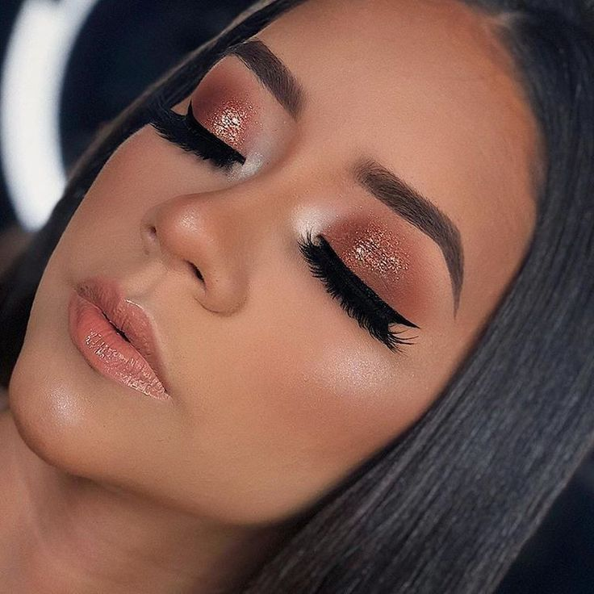

Foi no Egito que a maquiagem começou a ser usada tanto para higiene como para beleza. Os nobres pintavam os olhos em tons esverdeados à base de metais pesados, como respeito ao Deus Sol e para proteger as pálpebras. Nesta mesma época, surge a ideia de que as mulheres precisavam ter a pele clara e os homens escura. Cleópatra representou bem esta época, imortalizando seu banho de leite, cobrindo seu rosto com argila e maquiando seus olhos com pó de khol, obtido por uma poeira preta condensada e solidificada.
Para cuidar da pele, as romanas usavam uma máscara de farinha, miolo de pão e leite durante a noite. Dizem que Popeia, segunda mulher do Imperador Nero, conseguia uma pele muito branca graças aos banhos de leite de jumenta combinado com miolo de pão e farinha de favas. Para manter esta aparência apelavam para misturas de giz, pasta de vinagre e cascas de ovos.
O primeiro creme facial do mundo foi criado aproximadamente no ano 150 a.C., pelo físico romano de origem grega, Galeno. Ele adicionou água à cera de abelhas e azeite que ele mais tarde substituiu por óleo de amêndoas e bórax. Esta fórmula durou muitos anos.
Por volta do século XVI as pessoas começaram a relaxar nos hábitos de higiene pessoal. Isto contribuiu para o aumento de uso de perfumes e cosméticos. Quando as pomadas coloridas se tornaram mais seguras, em meados do século XVII, tornou-se também moda pintar os lábios.
Gertrude Vanderbilt Whitney, em 1892, popularizou a moda da maquiagem com o lançamento da Revista Vogue que depois foi comprada pelo grupo Condé Nast, que divulgou esses objetos muito atraentes para a maioria das mulheres. O uso dos cosméticos se tornou mais acessível a todos por volta do século XX com os avanços da indústria química fina.
Para conseguir uma maquiagem bonita e duradoura, devem-se cumprir os seguintes passos:
Em geral, como vimos no tópico anterior, a ordem correta é começar com a preparação da pele para uniformizar e tratar a textura da pele e prolongar a duração da maquiagem. Por fim, é hora de cuidar dos lábios com hidratação e a aplicação de um batom ou gloss.
Quem tem pele seca e quer evitar o ressecamento que compromete o acabamento da maquiagem, uma dica é apostar nas bases hidratantes. Esse produto contém ativos poderosos que tratam a pele durante a make e garante que ela fique hidratada o dia todo sem risco de craquelar.
Maquiagem bem feita, um cabelo bem arrumado e o coração remendado. Ótimo, ninguém vai suspeitar. Você não precisa ser linda, nem magra, nem maquiada, nem popular, nem ter um cabelo lindo, nem ter roupas caras nem sapatos novos para ser feliz.
O principal objetivo da maquiagem como muitos pensam, não é mascarar o indivíduo e enquadrar todos os rostos em um padrão de beleza nada natural, mas sim ressaltar as qualidades.
